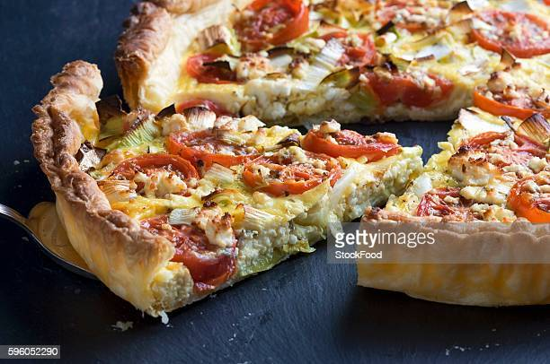

Grain-free Caramellized Onion Quiche

Description
Quiche is a savory French tart based around a lightly-whipped egg filling stuffed with
vegetables, cheeses, and meats. It is a meal that can be enjoyed hot, cold, or warm,
and is often regarded as better on the second day. This particular quiche focuses around
the rich flavors of caramellized onions with bits of leftover garden veggies and cheese-ends
we had remaining.
For more information about quiche and the French context behind
it, check out its Wikipedia page here.
Ingredients (Makes 2)
Each serves 5
- Two store-bought or hand-made grain-free pie pastries
- 3 medium onions
- 2 T Butter
- Salt
- Balsamic vinegar (or red wine vinegar or other deglazing agent)
- 1lb fresh or 8oz frozen spinach
- 8oz fresh tomatoes
- Leftover cheese-ends or half-pound shredded cheese
- One dozen eggs (+1 more egg to glaze the pastry)
- 1 cup of cream
- Salt, pepper to taste
- Pinch of cayenne
- Pinch of nutmeg
- 6 sprigs thyme
Directions
- Make pastries if hand-making, otherwise set aside.
- Quarter your onions annd roughly slice them.
- Over medium heat, preheat an 8-inch or larger skillet. When warm, add butter.
- Once the butter has melted, add your onions and a dash of salt. Cook the onions,
stirring occassionally, for about an hour until caramellized. The onions will be dark-brown
but not black and reduce substantially.
- Meanwhile, roughly chop your spinach. Add to a preheated skillet, squeezing the moisture out
with a spatula, for about 3 minutes if fresh or 30 minutes if frozen.
- Preheat the oven to 350F/180C.
- As oven preheats, begin halving the tomatoes and sprinkle the open faces
lightly with salt. If using large tomatoes, you may want to quarter or even eighth them.
- Load the pastry shells into two tart pans and parbake for ten minutes. Optionally, crack
and whisk an additional egg and brush the pastry to achieve a nice golden-brown texture.
- Grate cheese-ends if using.
- Remove pastry shells from oven and place a baking sheet with the tomatoes in. Cook for about 25 minutes.
They should be lightly blackened but not burnt.
- Sprinkle about a teaspoon of balsamic vinegar with the caramellized onions when they look
finished. Scrape the bottom of the pan to deglaze it.
- Crack all 12 eggs into a medium bowl. Add cream, the leaves from the thyme, cayenne, nutmeg, salt,
and pepper. Mix until light and frothy, careful not to over-mix or they will
become stiff.
- Begin assembling the tarts. First, place in the shredded cheese. Then spinach, tomatoes,
and last the caramellized onions (with juices). Evenly fill both tarts with eggs. This
order highlights the caramellized onions and prevents a soggy bottom. Bake in
preheated oven for 40 minutes or until no egg sticks to a toothpick.
- Let rest until cool. To enjoy, either reheat the quiche in the oven and serve or eat cold.